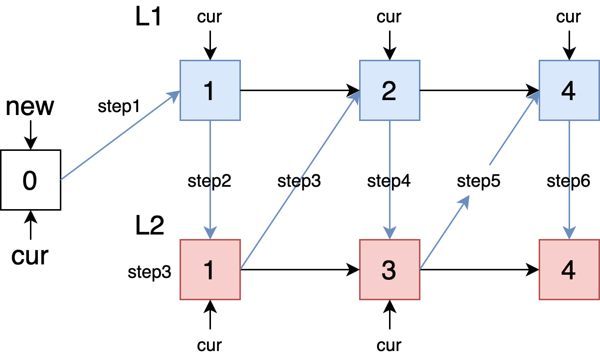

这题是Leetcode第21题，难度为easy。
Question
Merge two sorted linked lists and return it as a new list. The new list should be made by splicing together the nodes of the first two lists.
Example1
2Input: 1->2->4, 1->3->4
Output: 1->1->2->3->4->4
Answer
首先，给出了ListNode类：1
2
3
4class ListNode:
def __init__ (x):
self.val = x
self.next = None
此题有两种解法， 一种是迭代求解，一种是递归求解。首先我们使用迭代法，更加直观的理解问题。

迭代法(Iterative)
首先，创建两个变量newL和cur，都指向对象ListNode。通过变量cur来改变ListNode的索引，步骤如图所示。代码如下：1
2
3
4
5
6
7
8
9
10
11
12
13
14
15class Solution:
def mergeTwoLists(self, l1: ListNode, l2: ListNode) -> ListNode:
newL = cur = ListNode(0)
while l1 and l2:
if l1.val <= l2.val:
cur.next = l1
l1 = l1.next
else:
cur.next = l2
l2 = l2.next
cur = cur.next
cur.next = (l1 or l2)
return newL.next
此解法时间复杂度为$O(n+m)$，因为相当于遍历的L1和L2；空间复杂度为$O(1)$，只改变了指针引用。
回溯法（Recursion）
我们可以将问题分解成小问题：
- 如果
L1和L2里有一个为空，那么直接返回L1或L2; - 如果
L1和L2都不为空，则有两种情况：代码如下：1
2
3
4
5
6
7
8
9
10
11def mergeTwoLists(self, l1: ListNode, l2: ListNode) -> ListNode:
if l1 == None:
return l2
elif l2 == None:
return l1
elif l1.val <= l2.val:
l1.next = self.mergeTwoLists(l1.next, l2)
return l1
else:
l2.next = self.mergeTwoLists(l1, l2.next)
return l2
此解法时间复杂度为$O(n+m)$，空间复杂度为$O(n+m)$。